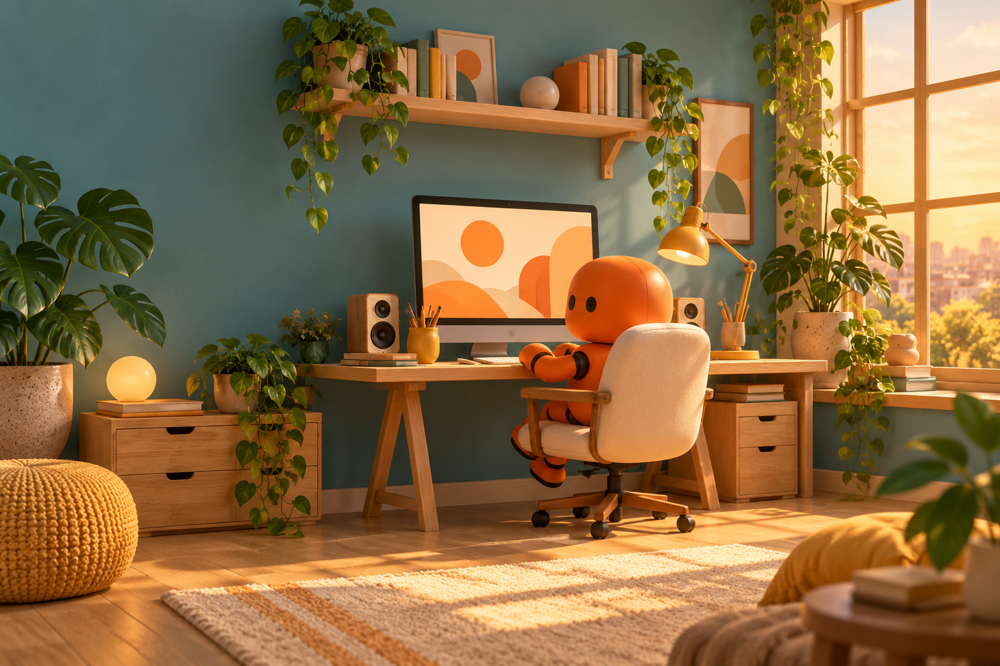
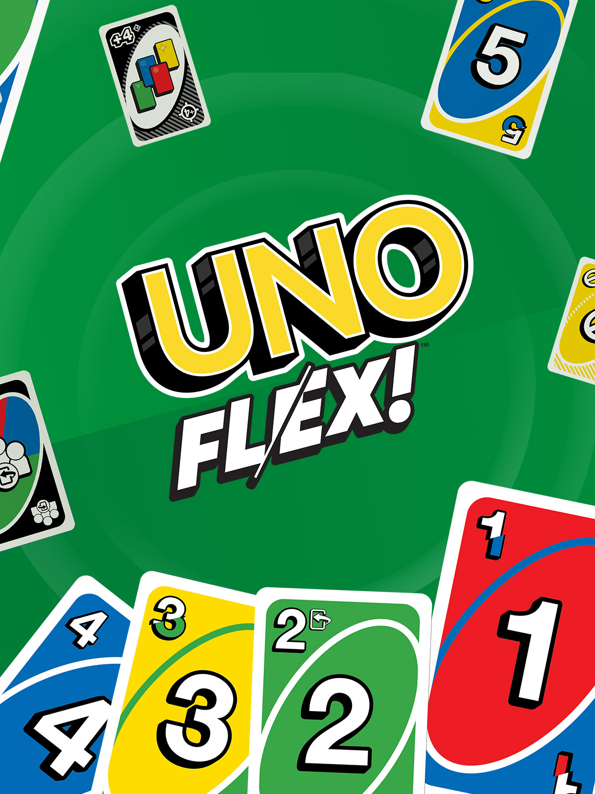

AI Concept & Visualization
Exploring form, styling, and atmosphere with AI-assisted visualization. Communicating a concept before production planning begins.
Scroll to explore the studio
I’m Ragvendar. I create concepts for mall activations, brand environments, and immersive installations at Buzzaar. I also develop games and make filters with TouchDesigner.


I’m an AI Concept Designer at Buzzaar Retail Marketing Solutions in Mumbai, creating concepts for mall activations, brand environments, and immersive installations.
My work connects creative ideas with how people experience a space: visitor flow, themed sets, interactive zones, photo moments, and festive retail experiences. I use AI-assisted visualization to explore form, styling, and atmosphere before production planning.
I joined Buzzaar in May 2024 in operations. That hands-on foundation in vendors, logistics, budgets, and on-site execution informs my design work today.
Business Administration & Management studies at Siddharth College of Arts and Science. Alongside spatial concepts, I develop games and create TouchDesigner filters.
Making early ideas visible, shaping visitor experiences, and exploring interactive technology.
Exploring form, styling, and atmosphere with AI-assisted visualization. Communicating a concept before production planning begins.
Mall activations, themed sets, interactive zones, photo moments, and festive retail installations.
Game development and TouchDesigner filters, exploring how people can play with and interact with an idea.
A selection of my portfolio designs, exploring festive installations, immersive spaces, and creative experiences.
Selected concept designs from my portfolio, visualized with AI.
A mix of AI concept explorations and executed installations and activations. Each project shows its status clearly.
I created the AI concepts for this festive experience, exploring the pavilion, its interior, an entrance arch, and a photo moment. See my designs alongside the actual pavilion setup at Nexus Westend Mall, Pune.
01 / My AI Concept
02 / The Actual Mall Setup

An executed tour brought to life by the Buzzaar events team, with a finale at WeWork BKC in 2025. A project connecting play, competition, and people.
Explore the project
A theatrical Diwali experience exploring how Rama’s return to Ayodhya could become a festive installation for a contemporary mall.
Explore the project
A grand festive tree enclosed within an illuminated spherical structure and crowned with an oversized golden bow.
Explore the projectCreative concept work informed by practical experience in event operations.
I joined Buzzaar in operations in May 2024. Today, I create AI-assisted concepts for mall activations, brand environments, and immersive installations, drawing on hands-on experience with vendors, logistics, budgets, and on-site execution.
Developed tailored visual activation concepts and marketing collateral for Club Mahindra and SP Wealth Management. Supervised all creative and branding materials for the 'Art in the Heart' competition.
Managed event projects, client servicing, creative proposals, and on-site operations for live experiences.
Have a space to transform, a brand experience to create, or an interactive idea to explore? Let’s talk.